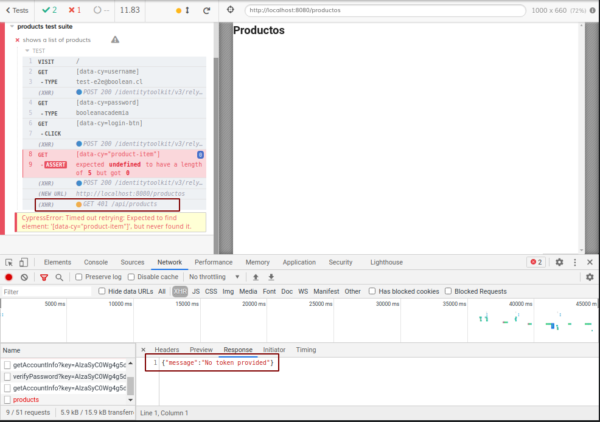
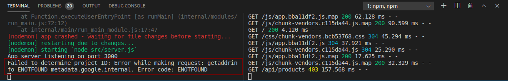
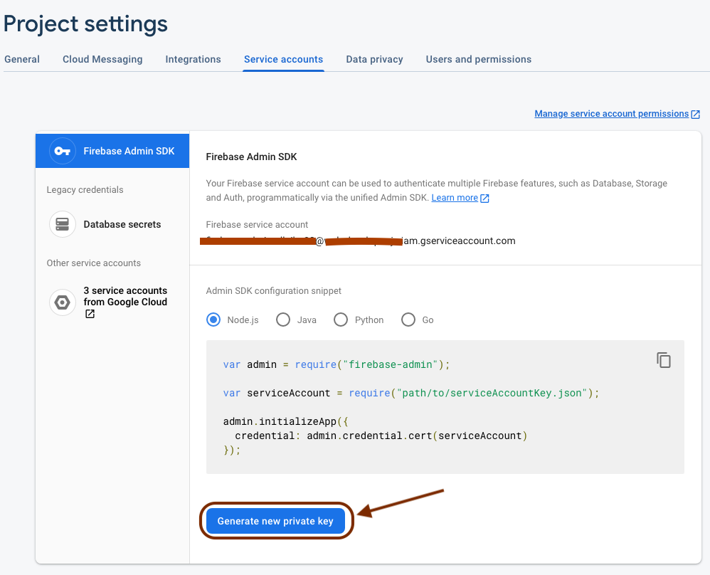
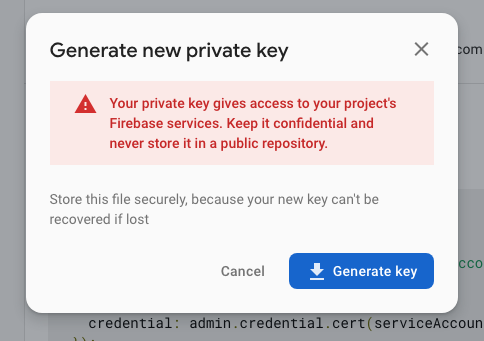
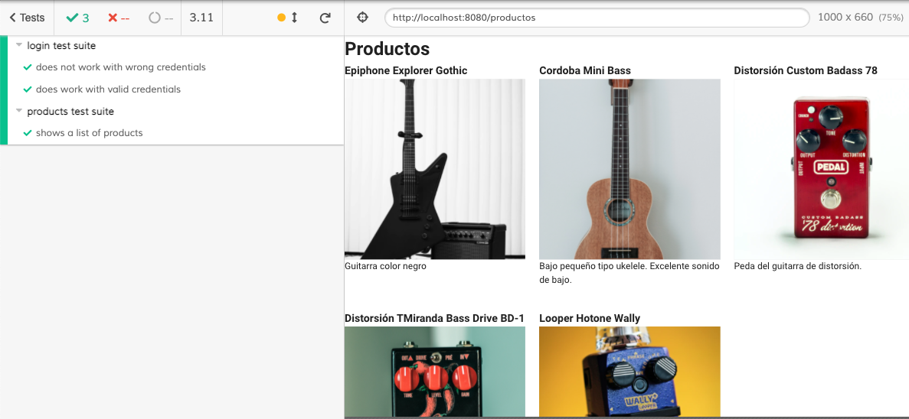

Validar autenticación en el Backend
Firebase hace muy simple la comprobación de tokens de autorización en el Backend. En resumen, debemos enviar una cabecera específica desde el Frontend y con la librería de Firebase integrada a nuestro backend podremos validar que las solicitudes sean de un usuario autenticado.
Esto llevará consigo una seríe de consideraciones relacionadas al manejo de variables de entorno.
El primer paso de esta etapa es la instalación de la librería firebase-admin en nuestro backend. Como ejercicio de estudio, es bueno tener corriendo las pruebas de front y relacionar los distintos códigos de error con el estado del servidor siguiente.
Ejecutamos las pruebas e2e sin encender el servidor y veremos que la solicitud GET a /api/products retorna error 500.
Ahora, en una terminal paralela ingresamos a la carpeta backend e ingresamos la siguiente instrucción:
npm i firebase-admin
En esta parte podemos encender el servidor con npm run dev. Al recargar Cypress veremos que todas pruebas vuelven a pasar, pero aún no verificamos nada en el servidor. Para esto reemplaza el contenido del archivo backend/src/server.js con lo siguiente:
const express = require('express')
const admin = require('firebase-admin')
const app = express()
const port = 3000
admin.initializeApp({credential: admin.credential.applicationDefault()})
app.use('/api', (request, response, next) => {
const headerToken = request.headers.authorization;
if (!headerToken) {
return response.status(401).json({ message: 'No token provided' })
}
const [authorizationType, tokenValue] = headerToken.split(' ')
if (headerToken && authorizationType.toLowerCase() !== 'bearer') {
return response.status(401).json({ message: 'Invalid token' })
}
admin
.auth()
.verifyIdToken(tokenValue)
.then(() => next())
.catch((error) => {
console.error(error.message)
response.status(403).json({ message: 'Could not authorize' })
})
})
app.use('/api/products', (request, response) => {
const statusCode = 200
const products = [
{
id: 1,
name: 'Epiphone Explorer Gothic ',
description: 'Guitarra color negro',
image: 'https://images.unsplash.com/photo-1550985616-10810253b84d?ixlib=rb-1.2.1&ixid=MXwxMjA3fDB8MHxwaG90by1wYWdlfHx8fGVufDB8fHw%3D&auto=format&fit=crop&w=742&q=80',
code: '0001'
},
{
id: 2,
name: 'Cordoba Mini Bass',
description: 'Bajo pequeño tipo ukelele. Excelente sonido de bajo.',
image: 'https://images.unsplash.com/photo-1556449895-a33c9dba33dd?ixid=MXwxMjA3fDB8MHxwaG90by1wYWdlfHx8fGVufDB8fHw%3D&ixlib=rb-1.2.1&auto=format&fit=crop&w=2734&q=80',
code: '0002'
},
{
id: 3,
name: 'Distorsión Custom Badass 78',
description: 'Peda del guitarra de distorsión.',
image: 'https://images.unsplash.com/photo-1527865118650-b28bc059d09a?ixlib=rb-1.2.1&ixid=MXwxMjA3fDB8MHxwaG90by1wYWdlfHx8fGVufDB8fHw%3D&auto=format&fit=crop&w=668&q=80',
code: '0003'
},
{
id: 4,
name: 'Distorsión TMiranda Bass Drive BD-1',
description: 'Pedal del bajo de distorsión.',
image: 'https://images.unsplash.com/photo-1614963590047-0b8b9daa3eb7?ixid=MXwxMjA3fDB8MHxwaG90by1wYWdlfHx8fGVufDB8fHw%3D&ixlib=rb-1.2.1&auto=format&fit=crop&w=2089&q=80',
code: '0004'
},
{
id: 5,
name: 'Looper Hotone Wally',
description: 'Pedal de looper. Super portable.',
image: 'https://images.unsplash.com/photo-1595167151695-dfb4846e70f8?ixid=MXwxMjA3fDB8MHxwaG90by1wYWdlfHx8fGVufDB8fHw%3D&ixlib=rb-1.2.1&auto=format&fit=crop&w=668&q=80',
code: '0005'
}
]
console.log(`GET with status code ${statusCode} in /api/products endpoint`);
return response
.status(statusCode)
.json(products)
})
app.listen(port, () => {
console.log(`App server listening on port ${port}`);
})
Si quieres conocer el detalle de cómo integrar firebase al servidor, revisa la siguiente documentación
Con esto, al recargar las pruebas veremos que el error pasó de 500 a 401, es decir, el servidor está revisando que las solicitudes tengan la cabecera de autorización y cómo no hemos configurado eso en el Frontend la aplicación entrega el mensaje y códigos especificados en la primera sentencia if configurada en el Middleware configurado para todas las peticiones hacia los endpoint encabezados por la ruta /api.
Para revisar en Cypress como salieron las peticiones al servidor puedes acceder a las herramientas para desarrolladores al igual que en cualquier navegador moderno. Haciendo esto nuestras pruebas se ven como en la siguiente imagen:

Lo mínimo para volver a pasar las pruebas sería agregar la cabecera correspondiente en el Frontend. Esto lo logramos reemplazamos el archivo frontend/src/store/index.js con el siguiente contenido:
import Vue from 'vue'
import Vuex from 'vuex'
import axios from 'axios'
import { Auth } from '@/firebase'
Vue.use(Vuex)
export default new Vuex.Store({
state: {
products: []
},
mutations: {
SET_PRODUCTS (store, products) {
store.products = products
}
},
actions: {
async getProducts (actionContext) {
const { commit } = actionContext
const productsURL = '/api/products'
try {
const token = await Auth.currentUser?.getIdToken(true)
const response = await axios.get(productsURL, { headers: { Authorization: `Bearer ${token}` } })
commit('SET_PRODUCTS', response.data)
} catch (error) {
console.log(error)
}
}
},
modules: {
}
})
Con esto en su lugar, recargamos Cypress y la terminal de Express indicará el siguiente mensaje de error:

Esto sucede cuando el SDK de firebase-admin no logra acceder la variable de entorno GOOGLE_APPLICATION_CREDENTIALS. Para entender más en detalle el porque de esto puedes revisar la siguiente sección de la documentación de Firebase en este enlace.
Para configurar esta variable será descargar el archivo de cuenta de servicio de Firebase entrando a la siguiente url:
https://console.firebase.google.com/project/<nombre-de-tu-proyecto-firebase>/settings/serviceaccounts/adminsdk
Si lo hacemos correctamente deberíamos ver algo como la siguiente imagen:

Presionamos el botón Generate new private key para generar el archivo que vamos a utilizar para autenticarnos al SDK de Firebase Admin.
Veremos un mensaje de advertencia que nos indicará que tengamos cuidado de mantener este archivo confidencial.

Al presionar el botón Generate keyse descargará un archivo con extensión .json. Vamos a renombrarlo con el nombre firebase-service-account.json y luego lo moveremos hacia la raíz del directorio backend en nuestro proyecto. Al hacer esto nuestro directorio debería quedar como el siguiente esquema:
└─ backend
└─ node_modules
└─ src
server.js
firebase-service-account.json <-- acá movemos el archivo de cuenta de servicio
package-lock.json
package.json
De momento lo mantendremos solo como archivo local ya que es importante que este archivo no se suba al repositorio remoto. Al momento de subir a producción (deploy) utilizaremos otro método para obtener este archivo para que sea parte del servidor una vez publicado.
Vamos a realizar un paso muy importante. Vamos a la raíz del repositorio al archivo .gitignore y agregaremos la siguiente linea:
firebase-service-account.json
⚠️ No olvides este paso ya que es un error de seguridad grave subir archivos de cuenta de servicio a un repositorio remoto Que no te pase lo que le ocurrió a Scotiabank
Vamos a configurar nodemon para que agregue las variables de ambiente que necesitamos en nuestro ambiente de desarrollo y más adelante agregaremos a producción. Para esto vamos a detener nuestro servidor de backend y creamos un archivo nuevo en la raíz llamado nodemon.json
backend/nodemon.json
{
"env": {
"NODE_ENV": "development",
"PORT": 3000,
"GOOGLE_APPLICATION_CREDENTIALS": "./firebase-service-account.json"
}
}
Ahora que ya tenemos este archivo podemos volver a ejecutar npm run dev y la ejecución de Nodemon tomará estas nuevas variables y estarán disponibles en la aplicación a través de la variable process.env. Aprovechando esto vamos a modificar 2 cosas en nuestro archivo backend/src/server.js.
...
const port = process.env.PORT
const environment = process.env.NODE_ENV
...
app.listen(port, () => {
console.log(`App server listening in mode ${environment} on port ${port}`);
})
Cómo podrás notar quitamos el puerto 3000 para asignar el puerto provisto por el ambiente de ejecución. En este caso puntual haremos esto porque más adelante subiremos este servidor a HEROKU y en su arquitectura nos inyectará esta variable. Si quieres ver más detalles respecto de esto puedes ver este enlace
También modificamos el mensaje que aparece cuando nuestro servidor esta escuchando las peticiones al puerto especificado. Al guardar el archivo backend/src/server.js deberíamos ver un mensaje como el siguiente:
nodemon] restarting due to changes...
[nodemon] starting `node src/server.js`
App server listening in mode development on port 3000
Ahora al recargar las pruebas desde Cypress podemos ver que una vez más las pruebas están pasando.

Ahora las peticiones al endpoint GET /api/products serán seguras y solo válidas para usuarios que se hayan autenticado a través de Firebase.
La ruta en el Backend está protegida, pero desde el Forntend no debiésemos poder entrar directamente a la ruta /productos. Para proteger la ruta debemos implementar la guard clause en el router de Vue. Debemos reemplazar el archivo de rutas por lo siguiente:
import Vue from 'vue'
import VueRouter from 'vue-router'
import Login from '../views/Login.vue'
import Products from '../views/Products.vue'
import { Auth } from '@/firebase'
Vue.use(VueRouter)
const routes = [
{
path: '/',
name: 'Login',
component: Login
},
{
path: '/productos',
name: 'Products',
component: Products,
meta: {
login: true
}
}
]
const router = new VueRouter({
mode: 'history',
routes
})
router.beforeEach((to, from, next) => {
const user = Auth.currentUser
const authRequired = to.matched.some(route => route.meta.login)
if (!user && authRequired) {
next('/')
} else {
next()
}
})
export default router
Ahora es un buen momento para un nuevo commit. Debemos detener el uno se los servidores y ir a la raíz del proyecto. Ahí las instrucciones serían las siguientes:
git add .
git commit -m "refactor(backend-firebase): Se agregó firebase-admin al backend para validar que las solicitudes estén autenticadas en las rutas /api"
Nuestro siguiente objetivo será dejar de enviar información estática desde el servidor y conectarnos a una base de datos. Utilizaremos los Fixtures para mantener la consistencia entre los datos de la base de datos y los verificados por Cypress en las pruebas.